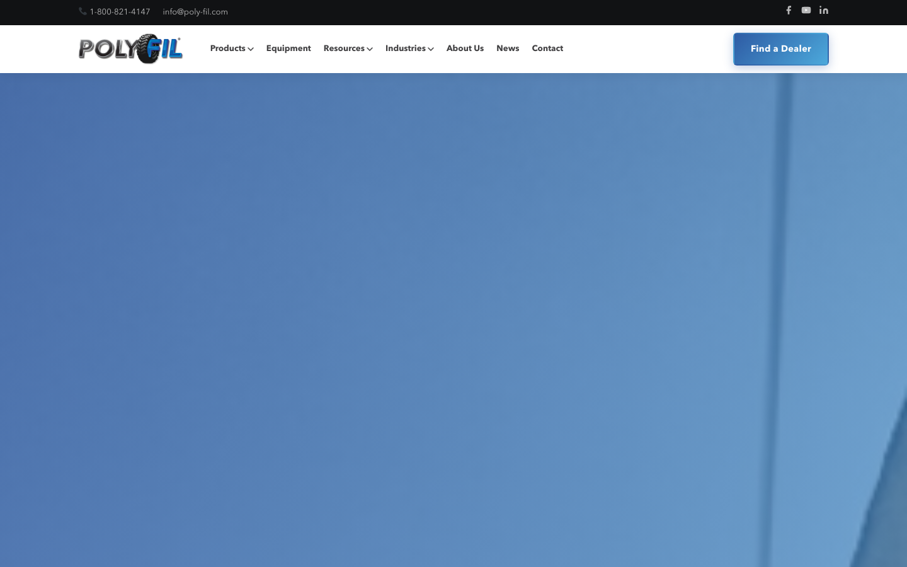
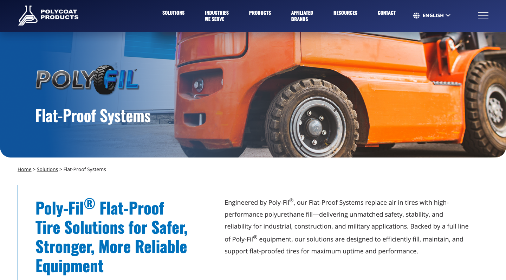
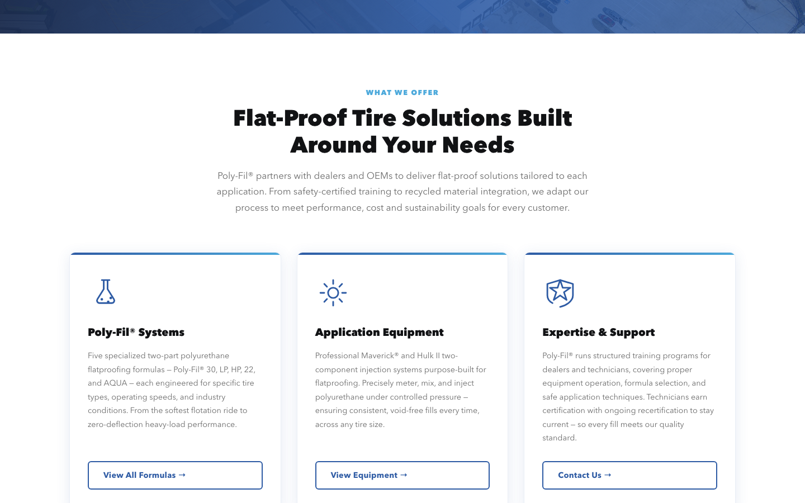
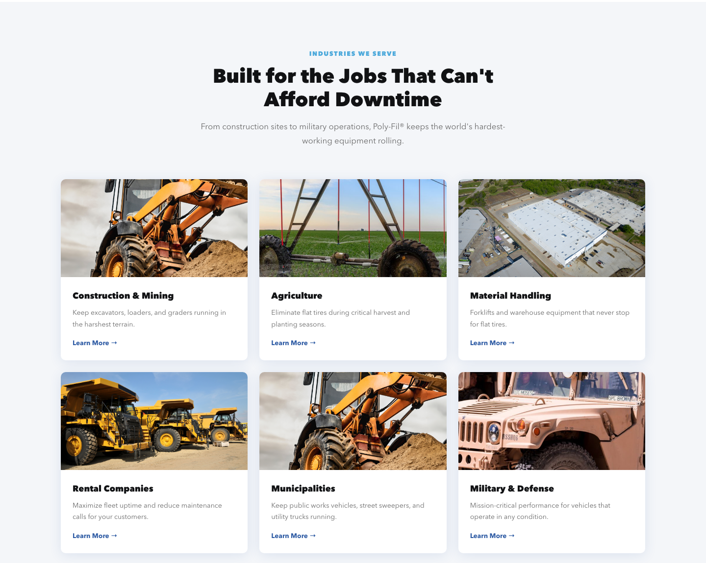
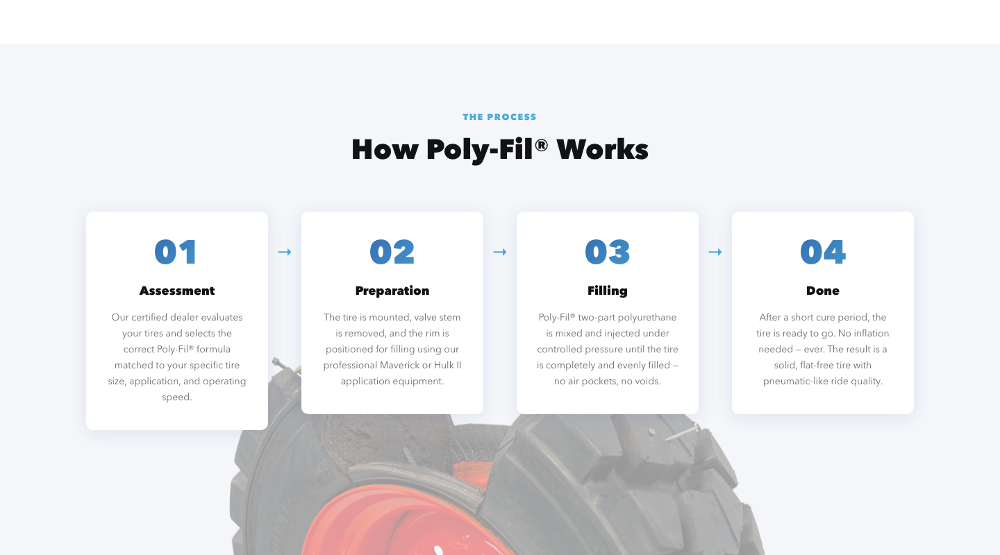
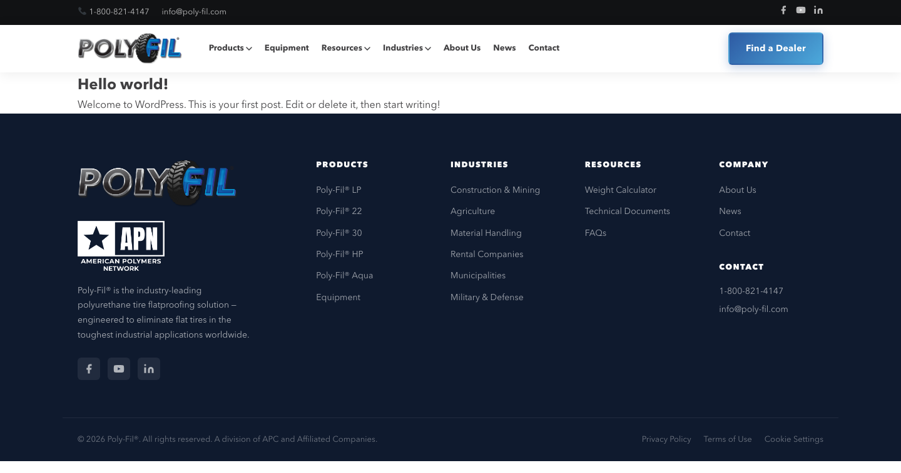

Web Design / Brand Launch

The Challenge
Poly-Fil had a real product with real traction — a polyurethane flat-proofing system used in construction, agriculture, military, and industrial fleets. But it lived as a single page buried inside the Polycoat parent site, listed alongside waterproofing and adhesives like any other product line.
For a system with five distinct formulations and customers across four industries, that wasn't enough real estate to tell the story. The brief: give Poly-Fil its own home.
The Approach
Working from a brand guide and collateral system my team had built previously, I designed a full standalone website — structure, layout, content hierarchy, and visual direction — then handed off to a developer to build in WordPress.
The design challenge was making a technical product legible without dumbing it down. Poly-Fil's five formulations aren't interchangeable — each is tuned for specific load, speed, and environment conditions. The site needed to help the right buyer find the right product fast, without a phone call.
Before
The original state — Poly-Fil as a single entry in Polycoat's product catalog, no standalone presence, no product architecture.

Design Thinking
The comparison table was the core design challenge — making five technically distinct products navigable without a phone call.

Structure
Industry cards — construction, agriculture, military, waste management — organized the site around buyer context, not product specs.

The Result

